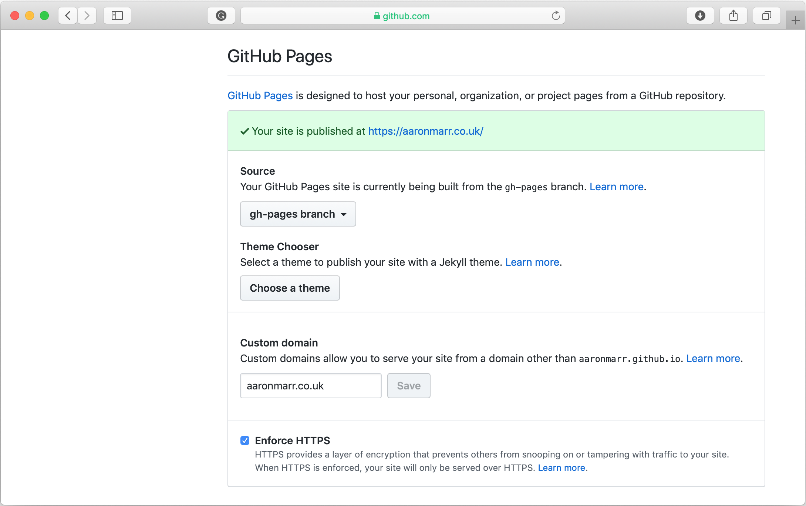
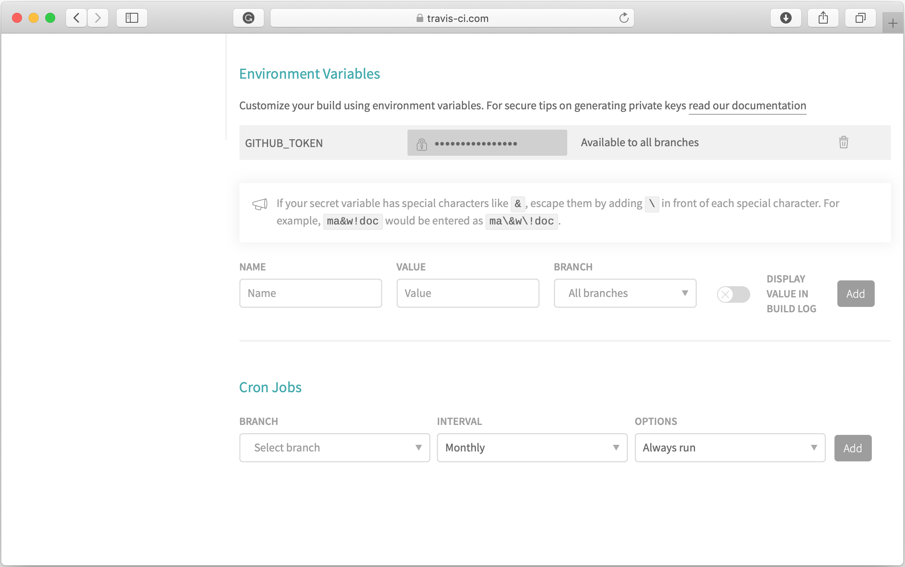

Deploying Eleventy to Github Pages using Travis CI
Eleventy is a brilliant static site generator built on JavaScript. I've always been a huge fan of Jekyll, but 11ty does provide some enhancements over Jekyll in terms of greater flexibility and a more vibrant community behind it.
One of the benefits of Jekyll is that it has first-class integration with Github Pages. You simply push to a gh-pages branch, and Github looks after building and deploying your site to a live URL for you. With 11ty, you are responsible for building and deploying. In this post, I'll look at deploying 11ty to Github Pages using Travis CI.
Create a repository on Github #
The first thing you will need is an Eleventy installation pushed to a repository on Github. I used the Eleventy base blog "starter" template for my site. This contains a base installation of 11ty, set up with a couple of static pages to get you going. I also created a repo on Github with the name "blog" and pushed my local 11ty site to the master branch.
There are a few settings in Github which I also adjusted. In the repository settings, there's a section for Github Pages. In here, I selected "enable pages" and also set up my custom domain name. If you're using a custom domain, you'll need to point your DNS to the Github Pages IPs, and also create a CNAME file in the base of your repository. More details about that can be found in the Github documentation.

One final step you will need to do is create a Github authentication key, which will be used by Travis to authenticate. In the developer menu, set up a new key, and copy to your clipboard. You will use this key once Travis has been set up.
Set up Travis #
At this point, I signed up for Travis. On signing up, you should follow the on-screen instructions to integrate Travis with your Github account. There will be several steps and you will be asked to grant permissions to Travis so that it can access any repositories you want to build and deploy.
Once the setup process is complete, you should see your 11ty repository in Travis. In the settings, you should add a new authentication key and paste in the key from the previous step. You should call this key $GITHUB_TOKEN – if you look inside the travis.yml file in your repo, you'll see there's a property called github-token which matches this key. This is what Travis uses to authenticate with Github when building and deploying.

Whilst inside the travis.yml file, there are a few other settings which should be updated. I set the path prefix to "/". I want to deploy my site without a prefix – i.e. https://aaronmarr.co.uk – and I also added my custom domain under the fqdn setting. I also set up my build and deploy branches. These are set to master and gh-pages, respectively. Here's what my finalised travis.yml file looks like.
language: node_js
node_js:
- 8
before_script:
- npm install @11ty/eleventy -g
script: eleventy --pathprefix="/"
deploy:
fqdn: aaronmarr.co.uk
local-dir: _site
provider: pages
skip-cleanup: true
github-token: $GITHUB_TOKEN # Set in travis-ci.org dashboard, marked secure
keep-history: true
target_branch: gh-pages
on:
branch: masterAt this point, you should be able to build and deploy to Github. In Travis, select "Build Now" and wait a minute or two for Travis to do its thing. Once Travis has finished building, you'll see a success message in the console indicating that your site is deployed.
One thing to bear in mind is Travis will conveniently deploy whatever you push to your master branch. For development, I set up a develop branch on Github, so that I only push/merge to master when I want to trigger a deployment.
Congratulations! You've successfully deployed your 11ty site using Travis CI. If you head back over to Github, you should see that Travis has created a new branch, gh-pages, with the built 11ty site inside. You should be able to see your site live, so open it in your browser, and bask in the glory! I hope you've found this post useful, please get in touch if you have any questions or comments.